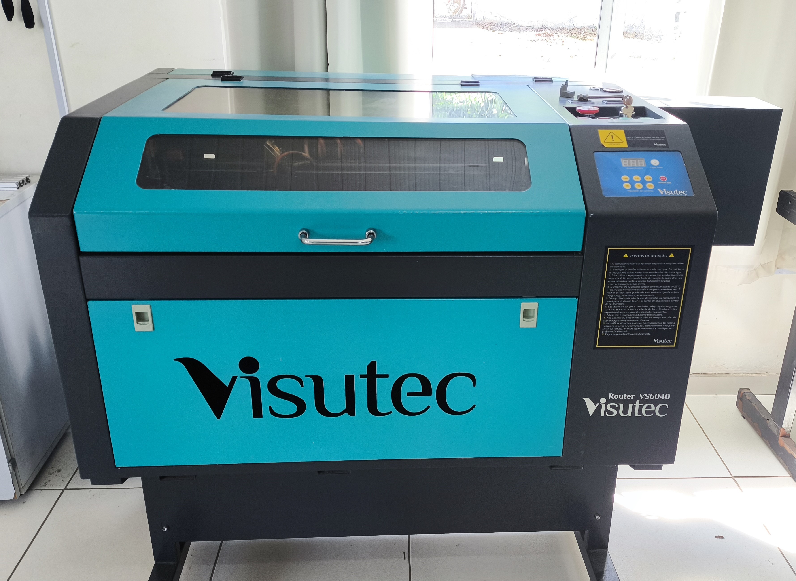
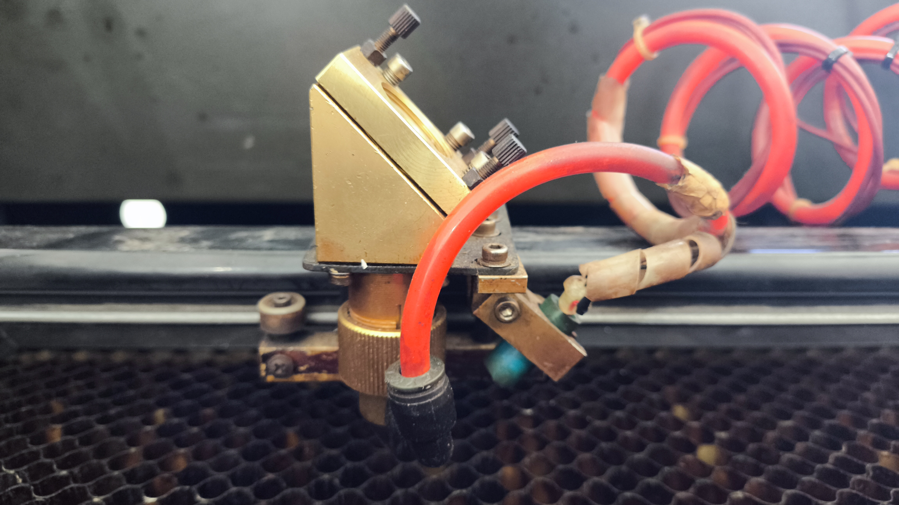
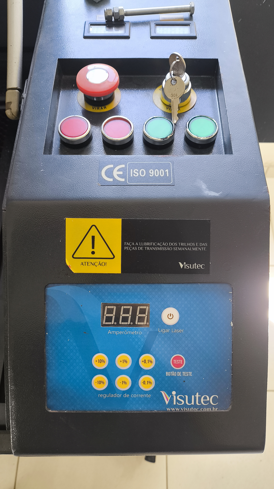
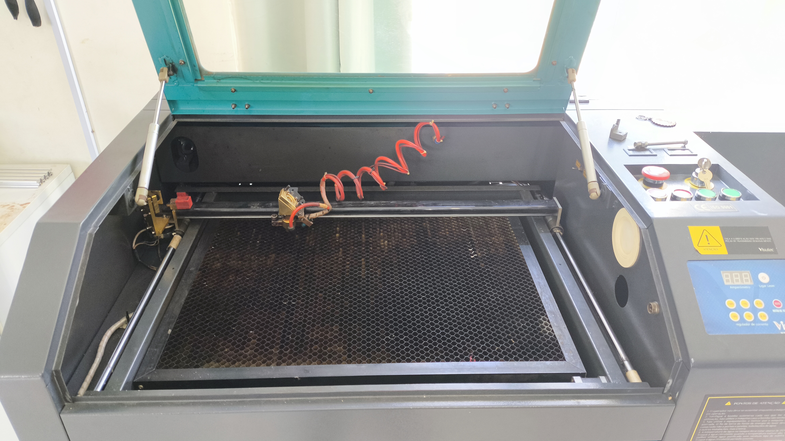

Chapter 3 CORTE E GRAVAÇÃO A LASER
A próxima máquina apresentada para os alunos foi a Router Laser CNC VS6040, com potência de 60 W. Ela realiza corte e gravação em vários tipos de materiais, possuindo uma ampla área de utilização. No FABLAB, os materiais mais utilizados são o acrílico, papelão, MDF e outros tipos de madeira.

3.1 Desenho 2D
Para realizar cortes e gravações na router laser, é necessário ter um desenho em 2D, vetorizado no formato SVG (Scalable Vector Graphics). Existem vários softwares capazes de criar desenhos vetorizados, mas os principais utilizados no FABLAB são o Inkscape e o CorelDRAW. A comunicação entre o computador e a máquina é feita pelo software K40 Whisperer, que é bem simples de usar. Ele é baseado em três operações, associadas às cores da paleta RGB: preto para gravação (raster engrave), vermelho para corte (vector cut) e azul para gravação em linhas (vector engrave). No software de desenho, é preciso especificar essas cores para obter o produto desejado, onde a cor preta (gravação) é preenchida e as cores vermelha e azul (corte e gravação em linhas) são contornos.
3.2 Funcionamento do laser
Essa máquina também se movimenta através de motores de passo acoplados a um sistema de correia. São dois motores, um para o eixo X e outro para o eixo Y, fazendo com que seja considerada uma máquina em duas dimensões. Há também um terceiro motor, responsável por ajustar a altura do material em relação ao bico do laser. Esse ajuste é feito através de um gabarito, que garante que a distância do bico ao material permita que o feixe do laser seja o mais fino possível, proporcionando um melhor acabamento.
O laser é gerado na parte de trás da máquina, através de um tubo de CO2. O feixe do laser é direcionado por meio de três espelhos até chegar ao bico do laser, também chamado de canhão, que está acoplado ao eixo X. Dentro do canhão há uma lente que foca os feixes em uma área menor.

O tubo do laser é resfriado por um sistema de bombeamento de água, e é importante monitorar a temperatura do laser e da água de resfriamento. Durante a operação, o laser emite bastante fumaça. Por isso, há um exaustor na parte inferior da máquina, conectado a uma tubulação que expulsa a fumaça para fora do laboratório.
A máquina possui um painel relativamente simples, com uma chave para ligar e desligar, um botão de emergência que desliga completamente, dois botões para descer ou subir a mesa, um botão para ligar a lâmpada interna e outro para ligar ou desligar o exaustor. Há também um controle de potência do laser, ajustável conforme o material e a ação desejada, seja corte ou gravação. A velocidade de cada ação é controlada pelo software K40 Whisperer.


Depois da explicação teórica pelo professor, ajudei os alunos a projetarem e fabricarem um exemplo prático para usar o laser. A maioria optou por criar caixas, utilizando o site MakerCase, que facilita o design de vários tipos de caixas de maneira simples e rápida. Posteriormente, os alunos fizeram personalizações usando o Inkscape. Instrui-os sobre o uso correto e seguro do laser, já que a máquina tem um grau de perigosidade que pode causar acidentes. No final, foi uma atividade produtiva, e a maioria compreendeu bem todo o processo.